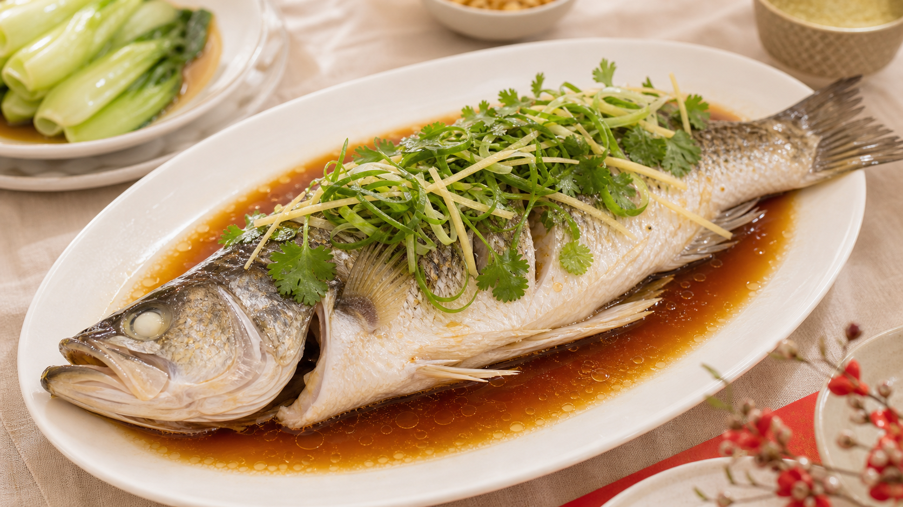
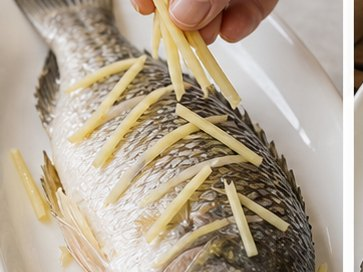
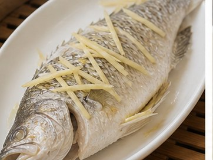
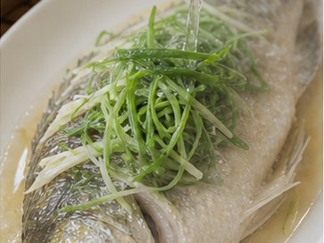
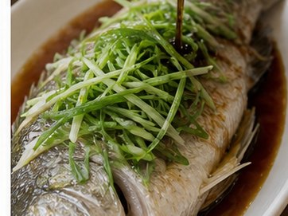
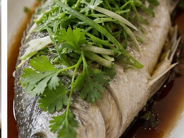

Reunion Dinner Recipe
Steamed Sea Bass
Abundance, freshness and good wishes

About This Dish
For Cantonese, Southern Chinese and many wider Chinese New Year family traditions, steamed fish symbolises abundance. Some families leave a small portion on the plate to represent surplus and good fortune year after year.
Ingredients
- Whole sea bass (500-700 g)
- Ginger (8 slices)
- Spring onion (2, cut into thin strips)
- Soy sauce
- Oil
- Cooking wine
- Optional coriander
Method
-

Clean the sea bass and pat it dry. Make 2-3 shallow cuts on each side. Place a few slices of ginger inside and on top of the fish. -

Place the fish on a heatproof plate. Steam over high heat for about 8-10 minutes, depending on the size of the fish. -

Place fresh ginger strips and spring onion strips on top of the fish. -

Heat the oil until hot, then pour it over the ginger and spring onions. Add soy sauce around the fish and serve immediately. -

Add coriander if using. Some families leave a small portion of fish uneaten, symbolising nian nian you yu, meaning surplus and abundance year after year.
Allergens
- Fish
- Soy
- May contain gluten depending on soy sauce brand
Please check product labels carefully, especially for sauces and prepared ingredients.